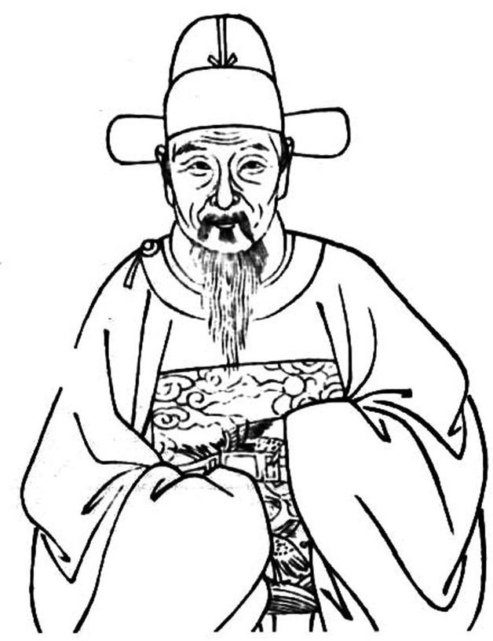
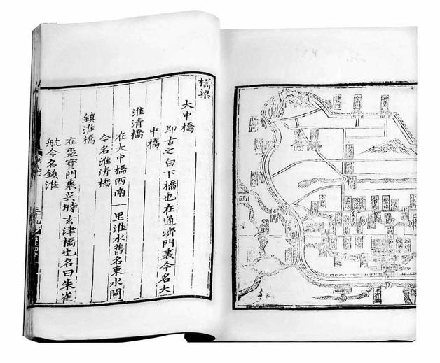

四
古云：国不可一日无君。4月25日以来，崇祯死国、北都沦陷，是明朝所受两大重创。但换个角度也不妨说，明朝虽然头破血流，却筋骨未伤；北京统治机器虽然瓦解，南京这套备用系统却完好无损，并且能够立即启动、投入运行——刻下，它只是缺少一位国君而已。
以最简明的情形论，崇祯皇位继承人属于他的男性后代。崇祯凡七子，其中四人早夭，最晚出生的二位皇子，连名字都没留下来。甲申之变时尚在人世的，是太子慈烺、皇三子定王慈炯[22]和皇四子永王慈炤。毫无疑问，他们都是皇位的当然继承人，顺序依长幼而定。问题是，到目前为止，三人下落不明。
既然失去简明，复杂就趁虚而入。作为王朝的当务之急，南京的重臣们为此紧锣密鼓、奔走忙碌，本来无可非议，甚至理所应当。然而，几乎每个人都在其中打着小算盘。
“小算盘”主要有两种，一是一己之私，一是集团利益。前者是指，通过拥戴新君捞取“定策之功”，瞬间大幅提升个人政治地位：成为政坛耀眼的明星，获得巨大权力。后者则从政治派别利益出发，力图确定一个符合自己需要的新君人选，考虑的重点在于谋求一位更易于合作的君主，这一结果的达成显然同样关乎权力。
打第一种小算盘的代表人物，是凤阳总督马士英。著名的东林党人打的是第二种小算盘。
崇祯死讯南来之际，“定策之功”立刻成为许多人的第一嗅觉，个个骚然心动、跃跃欲试。此可借路振飞一段话窥之：
有劝某随去南京扶立者，此时某一动则淮、扬不守，天下事去矣。此功自让与南国元勋居之，必待南都议定。不然，我奉王入而彼不纳，必且互争，自不待闯贼至而自相残，败事矣。[23]

路振飞，崇弘之交漕督、淮扬巡抚。
北变之后，他治下的淮安顿成南北要冲，一时际会，北来消息、南下诸王、败军之将、逃难士民，都首先经过此地。

《洪武京城图志》。
朱元璋定都南京，朱棣将它迁往北京。甲申，北京沦失，明廷又回到南京。像是一个轮回，有明近三百年历史，从南京始，于南京终；开国皇帝在此登基，末代君主却也是在这里亡国。
“此功自让与南国元勋居之”，那个“让”字言之不虚，当时最能捷足先登者，便是路振飞，因为几位藩王均逗留于他的府治，北都之变的情报也是他最先获知，他若愿将“定策”奇功揽在怀中，确有近水楼台之便。所以，早就有人“劝”他“去南京扶立”。但路振飞一不贪功，二以守责为重，三顾全大局，没有接受那种劝告。可是他的姿态不能代表别人；上述一番话，足以显现当时觊觎“定策”者甚众，上蹿下跳，争先恐后。
活动最积极而又起到一种凝聚作用的，是马士英。此时他身居凤阳总督之职，不在南京政治核心内，没有资格直接参与定夺。但他制订了一个强有力的方案，分别争取了驻扎在江北的明军主力刘泽清、高杰、刘良佐的支持，以及南京所谓“勋臣”（开国元勋后代）例如诚意伯刘孔昭等的支持，加上某些非主流朝臣（例如吏科给事中李沾），形成共同体。这个共同体的纽带是拓展话语权，马士英本人和武人集团均在政治核心以外，有表态权，不能参加集议；而“勋臣”虽然可以参与政治决策，在明代的文官政治结构中却长期边缘化。基于这样的诉求，以马士英为主角，几股力量聚成一团。严格说来，他们虽有共同的敌人，却无共同的利益，本质上乃乌合之众；他们之所以有力量，主要是因为兵权在握。
真正有利益认同的，是东林党人。这是政敌们加予他们的称谓。在古代，“党”是负面的贬义词，从黑，本义为晦暗不明。《说文》曰：“党，不鲜也。”《论语》曰：“吾闻君子不党。”孔颖达注：“相助匿曰党。”不过，“党”字摆脱旧义而向现代含义转化，也正是自东林始，因此我们现在能够安然使用“东林党人”一语而不必理会当时那种泼脏水的居心。其次，由于并不存在相应的真正的组织，东林党人并非一种确切所指，某人之被归入其中，多半根据对方的人脉、行迹，或干脆依主观印象来断。宽泛地说，东林党实际就是明末政坛一些抱改革意向的人，他们希望朝政立脚点放到“天下为公”上面，反对“以天下之利尽归于己，以天下之害尽归于人”[24]，以及附着其上的各种人和现象——太监、奸贪、皇族直至皇帝本人。这样的政治立场，在天启年间激发了借权力追逐私利者的强烈反弹，构成惨祸。崇祯即位后，很快为东林党人平反昭雪，定魏忠贤阉党为逆案，从此，东林党人成为政界主流。基本上，崇祯皇帝本人就是改革派，虽然后来在内外交迫、焦头烂额的处境下，他颇有反复和矛盾，但终崇祯一朝，东林党人的主流地位始终未变。眼下，南京政治核心即由他们构成。
当然，也有像高弘图（南京户部尚书）以及路振飞那样的官员。他们资望深厚，努力保持个人独立性，无党无派。不过，在政见上，他们往往与东林党人一致，少有隙罅；以后，我们会在高弘图的表现中清楚看见这一点。